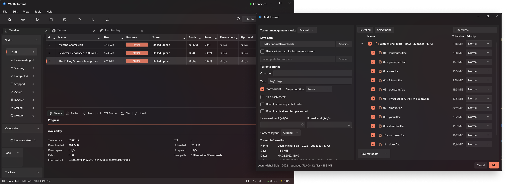
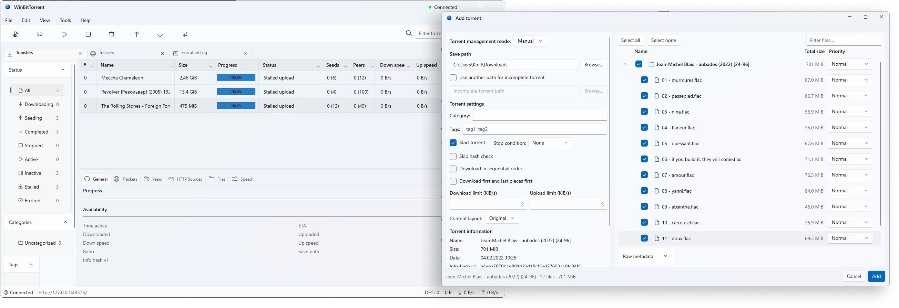
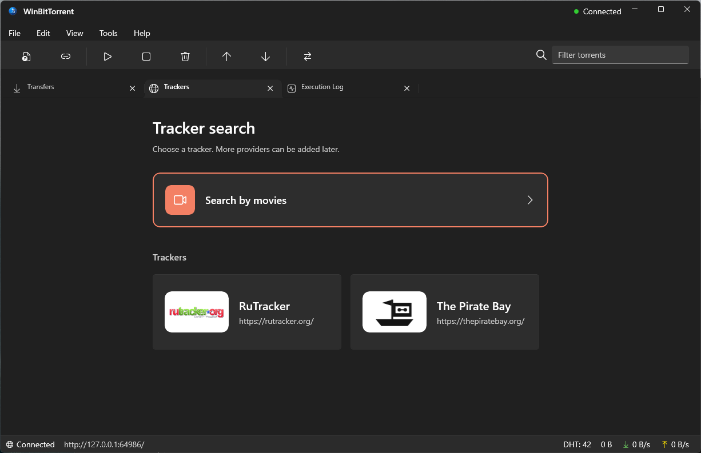
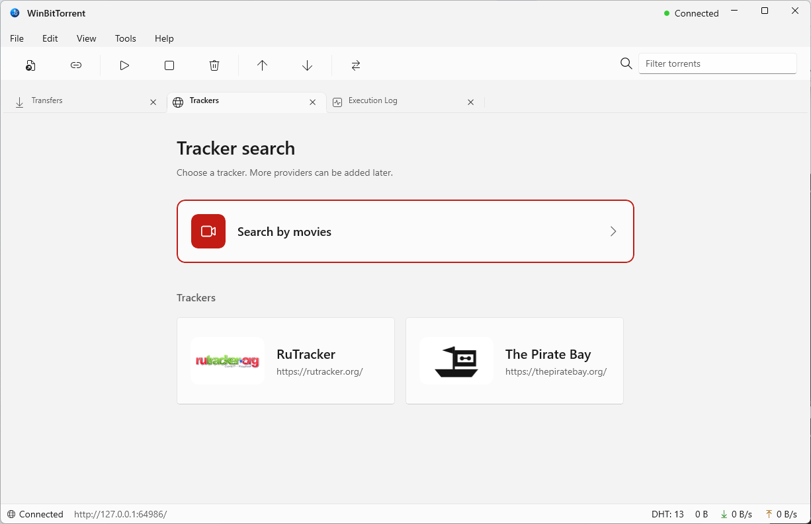
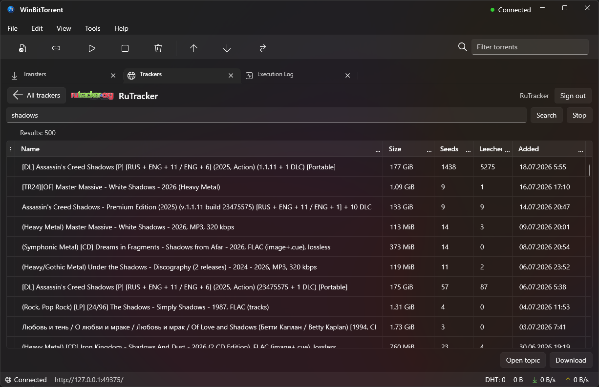
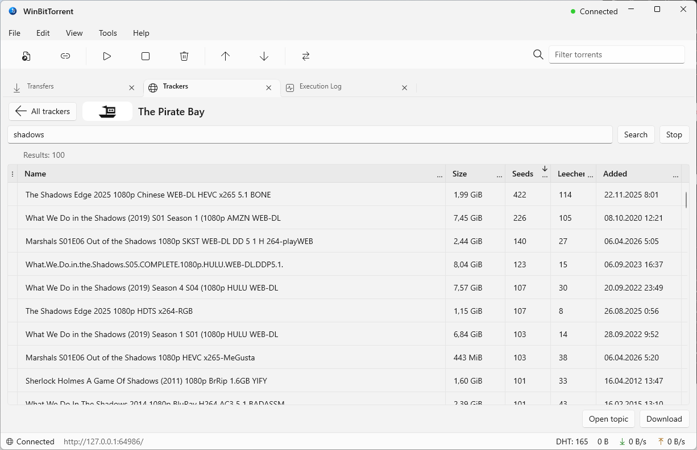

WinBitTorrent
Стабильный релиз
Версия 1.0.0
Windows 10 / 11 · x64
Нативный WinUI 3 клиент qBittorrent для Windows — современный интерфейс Windows 11 поверх проверенного движка qBittorrent / libtorrent.
Знакомьтесь с интерфейсом
Fluent Design, слой Mica, плавные анимации — и светлая, и тёмная темы.


Поиск и трекеры
Все трекеры — в одном окне
Ищите раздачи сразу по нескольким трекерам, не покидая WinBitTorrent, — а если ищете фильм, найдите его в каталоге TMDB и сразу перейдите к раздачам.
- Поиск по каталогу фильмов через TMDB — по постеру и описанию, а не только по названию
- Встроенные провайдеры RuTracker и The Pirate Bay, с возможностью добавить другие
- Опциональная поддержка прокси для обхода блокировок
- Безопасное хранение логина и пароля в хранилище учётных данных Windows




Технологии
Построено на современном стеке
Нативная производительность Windows и надёжное ядро с открытым исходным кодом.
Интерфейс
WinUI 3 · WinApp SDK 2.2
Среда
.NET 8 · x64
Архитектура
MVVM
Движок
qBittorrent 5.2.3
Библиотека
libtorrent 2.0.13
Системные требования и установка
- Windows 10 версии 2004 (сборка 19041) или новее
- 64-разрядная система (x64)
- Движок qBittorrent уже встроен — дополнительная настройка не нужна
- Учётные данные API хранятся в хранилище Windows, а не на диске
Сборки не подписаны сертификатом (платный сертификат отсутствует), поэтому при первом запуске Windows SmartScreen покажет предупреждение «Система Windows защитила ваш компьютер». Нажмите «Подробнее» → «Выполнить в любом случае». Для проверки целостности доступны контрольные суммы SHA256.